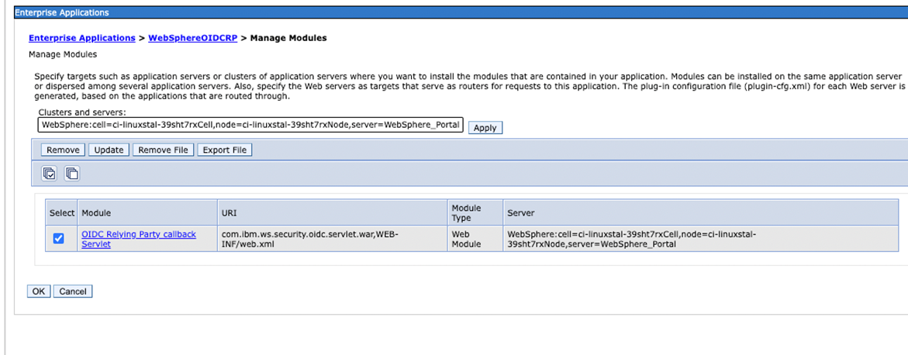

Updating WebSphere to support OIDC Authentication for DX
This document provides instructions on how to configure a WebSphere Application Server to act as an OpenID Connect Relying Party. For more information, see Configuring an OpenID Connect Relying Party.
Follow the tasks to execute this configuration:
- Install the OIDC RP TAI for WebSphere
- Configure the TAI against Keycloak OIDC
- Updating WAS security properties to match the new TAI requirements
- Adding the server certificate to the WAS trust store to allow internal HTTPS communication
- Adding the trusted authentication realm
- Security role to user or group mapping
- Updating the DX Logout flow for OIDC
- Configuring DX VMM to match OIDC identities
Installing the OIDC RP TAI
-
Install the OIDC RP TAI. For more information, see Configuring an OpenID Connect Relying Party.
kubectl exec -it dx-deployment-core-0 bash -n dxns cd /opt/HCL/AppServer/bin ./wsadmin.sh -f installOIDCRP.py install dockerNode WebSphere_Portal Username: wpsadmin Password: wpsadmin ... ADMA5013I: Application WebSphereOIDCRP installed successfully. -
Open the ISC and go to Applications > Application types > Enterprise Applications > WebsphereOIDCRP > Manage modules.
-
Select the available module and click “Apply” then “OK”.

Restarting the server / DX core to apply all changes
Restart the server (that is, the DX core JVM) do load the newly installed OIDC RP TAI. This is required for the next configuration steps. Restarting the server can be done in various ways, for example, through the ConfigEngine:
kubectl exec -it dx-deployment-core-0 bash -n dxns
/opt/HCL/wp_profile/ConfigEngine/./ConfigEngine.sh stop-portal-server
Configuring the OIDC RP TAI against your IdP
The following configuration allows the OIDC TAI to contextualize which requests should be intercepted and how to treat them. In particular, this configuration is tightly connected to the IdP realm and client configuration.
The interceptor is configured in the ISC under Security > Global Security > Web and SIP security > Trust association > Interceptors:
-
Click on the New button to create a new interceptor with the Interceptor class name
com.ibm.ws.security.oidc.client.RelyingParty.Note
If the interceptor already exists, click on it to access the configuration properties instead of creating it again.
-
Add the following custom properties:
Name Value provider_1.identifier hcl provider_1.clientId hcl-dx-oidc-client provider_1.clientSecret <CLIENT_SECRET> provider_1.discoveryEndpointUrl https://<IDP_HOSTNAME>/auth/realms/hcl/.well-known/openid-configuration provider_1.interceptedPathFilter /wps/myportal provider_1.excludedPathFilter /ibm/console,/ibm/console.* provider_1.issuerIdentifier https://<IDP_HOSTNAME>/auth/realms/hcl provider_1.signatureAlgorithm RS256 provider_1.userIdentifier username (Note: Could also use emailhere as well.)provider_1.useDefaultIdentifierFirst false provider_1.scope openid provider_1.signVerifyAlias hcl-dx-oidc-cert provider_1.useJwtFromRequest IfPresent provider_1.createSession true provider_1.verifyIssuerInIat true provider_1.audiences ALL_AUDIENCES provider_1.setLtpaCookie true provider_1.callbackServletContext /oidcclient provider_1.mapIdentityToRegistryUser true Note
- Make sure to replace the
<IDP_HOSTNAME>and<CLIENT_SECRET>placeholders with your respective details. The client secret is available through your IdP client configuration. Also ensure other properties match your environment configuration, for example, the path filter matches your DX context, the OIDC URLs match your IdP endpoint structure, and the right client id is used. - Set the
interceptedPathFilterproperty to/wps/myportal, so that TAI protects any request to this resource. The value is subject to change and is completely dependent on how you have configured the context root while setting up DX. This property allows you to specify a comma-separated list of regular expression URI patterns. To protect any additional requests to the resources can be specified using this property.
- Make sure to replace the
-
Click Apply and OK. Click Save to save the changes directly to the master configuration in the alert message.
Updating WAS security properties
To update the custom properties to match the OIDC TAI config and its expected behaviour, go to Security > Global security > Custom properties:
-
Delete the property
com.ibm.websphere.security.DeferTAItoSSOif it exists. -
Add or update the following properties:
Name Value com.ibm.websphere.security.customSSOCookieName LtpaToken2 com.ibm.websphere.security.disableGetTokenFromMBean false -
Click Save, to save the changes.
Adding the hostname or server certificate to the WAS trust store
To allow internal HTTPS communication with your IdP, add the hostname (FQDN) to the WebSphere trust store.
In the ISC, navigate to Security > SSL certificate and key management > Key stores and certificates > NodeDefaultTrustStore > Signer Certificates > Retrieve from port:
-
Set the following properties:
Name Value Host <IDP_HOSTNAME> Port 443 Alias hcl-dx-oidc-cert (Note: This is the same value that is provided in the interceptor property signVerifyAlias) -
Click Retrieve signer information, to load the certificate details.
-
Click OK and Save to save the master configuration.
Adding the trusted authentication realm
In the ISC, navigate to Security > Global Security > Configure > Trusted authentication realms - inbound:
-
Add the following value for your environment
https://<IDS_HOSTNAME>/auth/realms/hcl. -
Click OK and Save the save changes to the master configuration.
Security role to user or group mapping
In the ISC, navigate to Enterprise Applications > wps > Security role to user/group mapping:
- Check the box next to All Role and under the dropdown Map Special Subjects select the
All Authenticated in Application's Realmoption.
Updating the DX Logout flow for OIDC
-
In the IBM WebSphere Application Server Integrated Solutions Console, navigate to Resources > Resource Environment > Resource Environment Providers > WP ConfigService > Custom properties:
-
Add or update the following properties:
Name Value redirect.logout true redirect.logout.ssl true redirect.logout.url https://<IDP_HOSTNAME>/auth/realms/hcl/protocol/openid-connect/logout?post_logout_redirect_uri=https://<DX_HOSTNAME>/wps/portal&client_id=hcl-dx-oidc-client
Configuring DX VMM to match OIDC identities
Setting the login property to mail
Follow the steps, to set the log in property to mail to match the identity attribute coming in from your IdP:
-
Go to the IBM WebSphere Application Server Integrated Solutions Console.
-
Navigate to Security > Global security > User account repository > Configure >
-
Set the field for Federated repository properties for login to
mail. -
Click OK and Save to save the master configuration.
Updating IBM WebSphere Application Server sub-component Virtual Member Manager (VMM) to map user attributes
-
After setting the login property to
mail, this change is worked into the WAS wimconfig.xml .Note
This requires a manual update of the file, make sure to back the file up as this will corrupt your instance.
kubectl exec -it dx-deployment-core-0 bash -n dxns cd /opt/HCL/wp_profile/config/cells/dockerCell/wim/config/ # Create a backup cp wimconfig.xml wimconfig.xml.backup # Start editing the wimconfig.xml vi wimconfig.xml -
Find the
userSecurityNameMappingconfig attribute in the realmConfiguration and change the value of the propertypropertyForOutputtouniqueName:# before <config:userSecurityNameMapping propertyForInput="principalName" propertyForOutput="principalName"/> # after <config:userSecurityNameMapping propertyForInput="principalName" propertyForOutput="uniqueName"/> -
Make sure to save the changes.
Restarting the server / DX core to apply all changes
Restart the DX environment (specifically, the DX core JVM) for the changes to take effect. Restarting the server can be done in various ways, for example, through the ConfigEngine:
kubectl exec -it dx-deployment-core-0 bash -n dxns
cd /opt/HCL/AppServer/bin
./stopServer.sh WebSphere_Portal
./startServer.sh WebSphere_Portal
The restart takes a few minutes to complete.
What's next
Note
In case you desire to fully detach your WebSphere environment from the user federation, this is considered a "transient user" setup. This requires additional steps to be performed and are outlined in Updating WebSphere to support OIDC Authentication for DX with Transient Users.
Once you have updated WebSphere to support OIDC authentication for DX, look at the steps outlined in Adjusting the DX Login flow for OIDC.